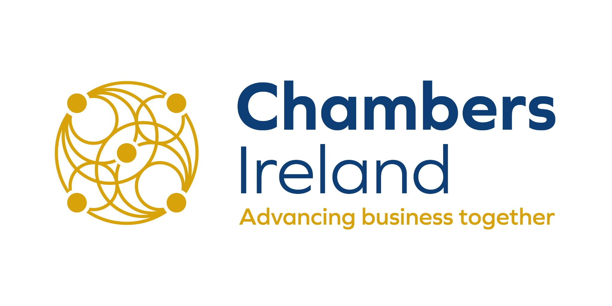

Interactive companion to the SDG Toolkit for Business
Build your SDG action plan
Businesses have an essential role in supporting the United Nations Sustainable Development Goals. The Chambers Ireland toolkit brings structure and practical guidance to that work.
This planner turns the toolkit's practical suggestions into a working plan. Record what your organisation has completed, what is under way and what you want to do next. Add an owner, target date and notes, then export the plan to share or review.
How to use the planner
1
Explore the suggestionsBrowse by theme or search for a particular area of action.
2
Record where you standMark each action as To do, In progress or Done.
3
Build and share your planAdd responsibility, timing and evidence, then export your action plan.
0
Actions selected
0
To do
0
In progress
0
Done